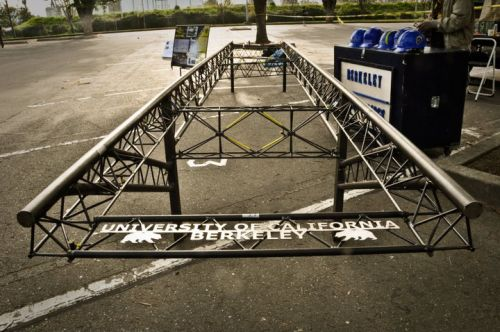
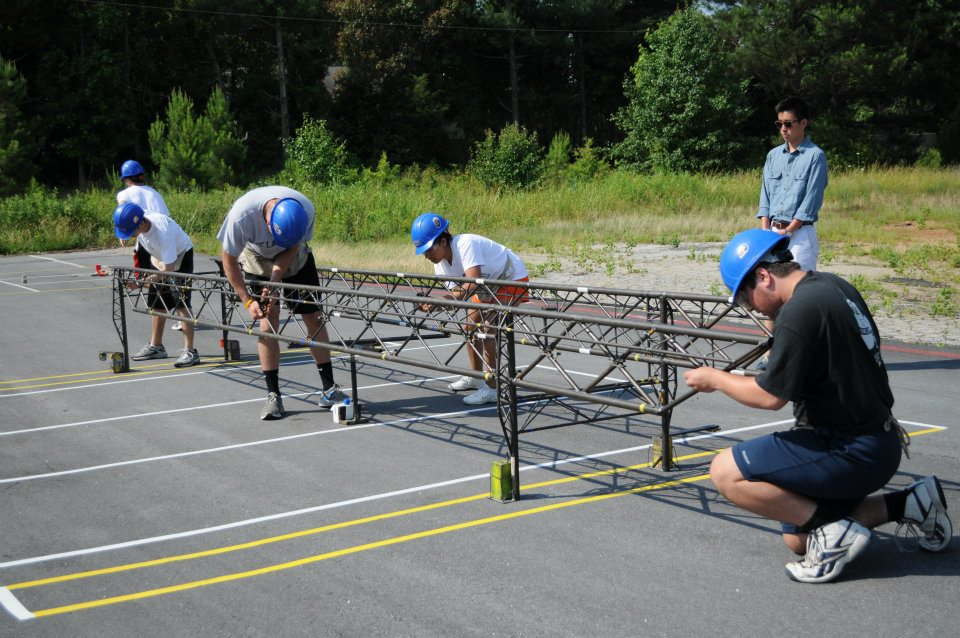

The Competition
The Student Steel Bridge Competition is an annual contest that challenges engineering students to design and fabricate the most structurally efficient, economic, stiff, and light bridge. This important competition offers future civil/structural engineers the opportunity to show their skills in steel design, steel fabrication, and teamwork.What We Do
In the fall semester, the Cal Steel Bridge Team works on the design of the bridge. All members participate in design teams to determine the best design that follows the rules for the year. By the end of the design segment, every individual is proficient in AutoCAD and SAP2000. After determining our design, the SolidWorks team produces drawings that will be used by the shops for fabrication. In the spring semester, the Cal Steel Bridge Team heads over to one of two shops: Davis or Etcheverry. In the shops, students fabricate every single member and connection on the bridge. After fabrication, we put our construction team to work on putting our bridge together quickly and efficiently. Overall, it's a lengthy but rewarding process!
